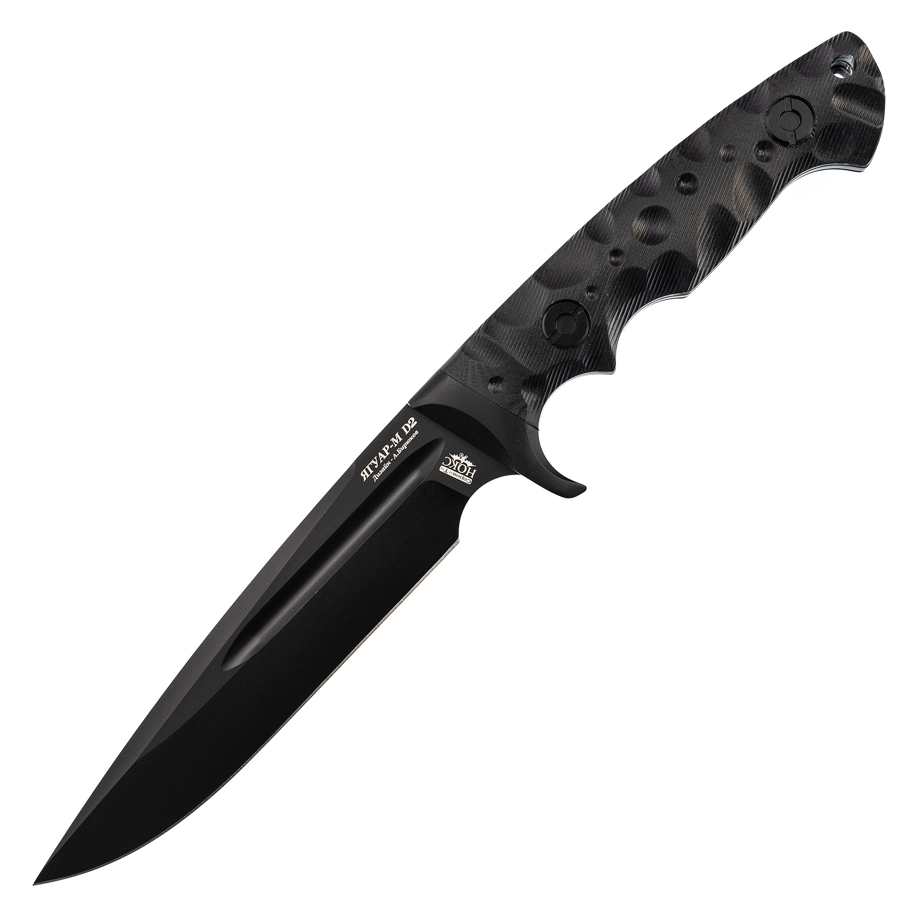

Нож Ягуар М, темный
Описание товара
Нож с фиксированным клинком Ягуар М. Прочный цельнометаллический клинок с полуторной заточкой и притупленным фальшлезвием.
Характеристики товара
- Производитель: НОКС
- Марка стали: D2
- Длина клинка (мм): 158
- Ширина клинка (мм): 15
- Толщина обуха (мм): 5
- Материал рукояти: Титан
- Длина (мм): 300
- Материал лезвий: Сталь D2
Подробное описание товара
Дополнительную прочность клинку придает дол, гармонично вписываясь в совершенный дизайн ножа. Для более удобного хвата есть подпальцевый выступ. На рукояти ножа установлены накладки из пластика G-10, закрепленные двусторонними винтами, что способствует в случае необходимости легко их заменить. Сама рукоять надежно удерживается в руке при силовой работе. На ноже имеется отверстие для темляка.